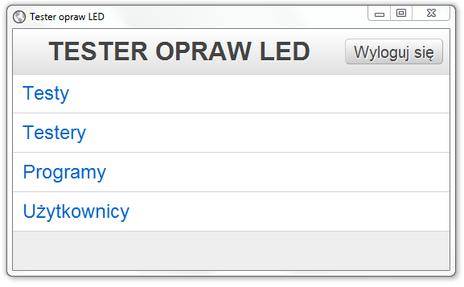
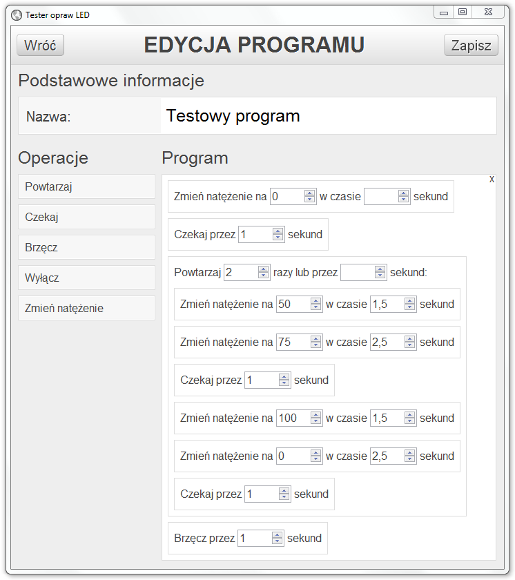
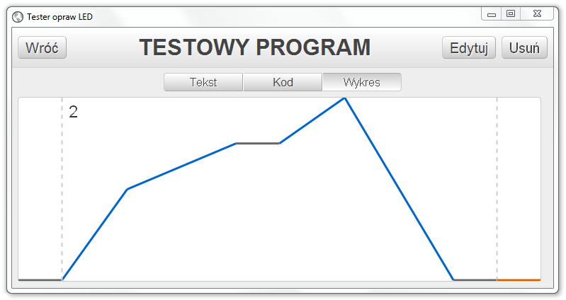
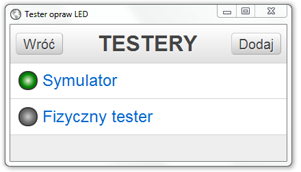
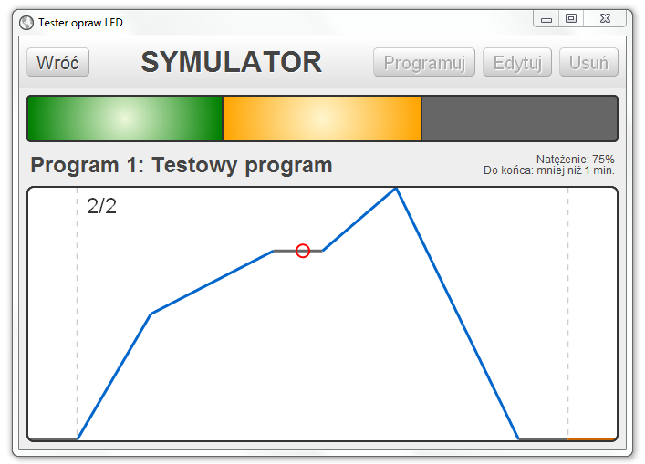
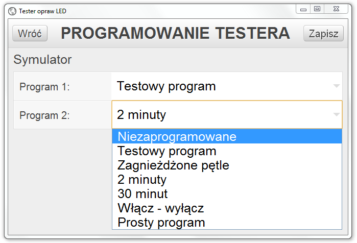
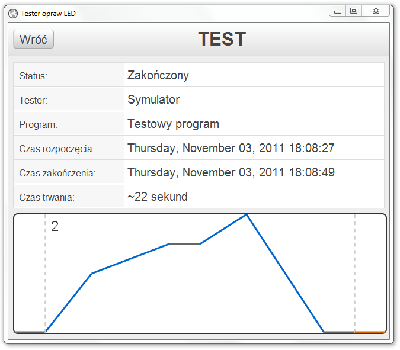

Tester FreeStreet
Wstęp
Niniejszy dokument stanowi dokumentację użytkownika dla instalacji Testera FreeStreet.
Uruchomienie aplikacji odbywa się poprzez wpisanie przez użytkownika adresu IP i portu testera w przeglądarce internetowej. Dane te różnią się w zależności od tego, w jakiej sieci znajduje się użytkownik. Dla sieci ML_WLAN adres to http://192.168.21.44/, natomiast dla sieci domenowej - http://161.87.64.20:8080/.
Wymagania
Do poprawnego korzystania z aplikacji wchodzącej w skład systemu, użytkownik musi mieć zainstalowaną jedną z popularnych, aktualnych przeglądarek internetowych.


Moduły
Użytkownicy

Ekran menu administratora
Moduł użytkowników pozwala na wyświetlanie, modyfikację i usuwanie istniejących użytkowników oraz dodawanie nowych. Dostęp do tego modułu mają jedynie użytkownicy z rolą administratora.
Każdy użytkownik posiada swój login (będący adresem e-mail) i hasło oraz ma zdefiniowaną rolę. Role dzielą się na:
- użytkownika,
- programistę,
- administratora.
Domyślna rola to użytkownik. Użytkownikiem jest osoba niezalogowana oraz osoba zalogowana na konto z rolą użytkownika. Użytkownik ma dostęp jedynie do funkcji podglądowych. Może przeglądać historię testów, stany testerów oraz śledzić uruchomione na nich programy.
Aby uzyskać większe uprawnienia, należy zalogować się na konto z rolą programisty lub administratora. W tym celu, poprzez wciśnięcie przycisku , przechodzimy do ekranu logowania. Następnie wpisujemy login (adres e-mail) oraz hasło i ponownie wciskamy przycisk . Po udanym logowaniu zostaniemy przeniesieni do głównego menu.
Użytkownik z rolą programisty, po za tym co daje rola użytkownika, uzyskuje dostęp do modułu programów oraz funkcji programowania testerów.
Użytkownik z rolą administratora, po za tym co daje rola programisty, uzyskuje dostęp do modułu użytkowników oraz funkcji zarządzania testerami oraz usuwania starej historii testów.
Programy
Moduł programów pozwala na przeglądanie, modyfikację i usuwanie istniejących oraz dodawanie nowych programów. Dostęp do tego modułu mają użytkownicy z rolą programisty lub administratora.
W celu dodania nowego programu, klikamy przycisk na liście programów, podajemy nazwę i wciskamy przycisk . Dodany program powinien pojawić się na liście, jednak nie ma on jeszcze żadnych operacji.
Operacje do programu można wybrać przechodząc do ekranu edycji danego programu.

Ekran edycji programu
Na ekranie edycji programu po lewej stronie znajduje się lista operacji, z których możemy zbudować program. Budowanie programu odbywa się poprzez przeciągnięcie operacji z lewej strony na znajdujący się po stronie prawej obszar programu.
Najeżdżając kursorem myszki na wybraną operację lub obszar programu, możemy zauważyć, iż obramowanie zmienia kolor z szarego na pomarańczowy. Oznacza to element, z którym możemy wejść w interakcję. Naciśnięcie i przytrzymanie lewego przycisku myszki na wybranym elemencie sprawi, że niektóre, inne elementy zmienią kolor obramowania na niebieski. Oznacza to, że przeciągany element może zostać przeniesiony nad wybrany element z niebieskim obramowaniem. Po przeniesieniu, element ten zmieni kolor obramowania na zielony, informując o tym, że po upuszczeniu przeciąganego elementu, zostanie on dodany do programu na ostatniej pozycji na liście operacji elementu, na który został upuszczony. Podsumowując: elementy z pomarańczowym obramowaniem zostają dodawane jako potomkowie elementów z zielonym obramowaniem.
Po dodaniu wybranej operacji do programu należy wypełnić pola z nią związane. Rożne operacje mają różne parametry:
-
Powtarzaj - pętla powtarzająca, podaną ilość razy lub przez określoną ilość sekund,
operacje w niej zawarte. Jeżeli podamy ilość sekund, to zostanie ona zamieniona automatycznie na ilość
iteracji pętli poprzez podzielenie danej ilości sekund przez sumę czasu trwania wszystkich operacji
w tej pętli. Na przykład, jeżeli podamy
300jako ilość sekund, a jedna iteracja tej pętli (suma czasów wszystkich operacji w niej zawartch) trwa33sekundy, to otrzymamy300 / 33 = 9powtórzeń. Pętle można zagnieżdżać. - Czekaj - nic nie rób przez podaną ilość sekund. Wartość natężenia przed i po tej operacji zostaje taka sama.
- Brzęcz - włącza brzęczyk na określoną ilość sekund. Wartość natężenia przed i po tej operacji zostaje taka sama.
- Wyłącz - wyłącza lampę na określoną ilość sekund. Po ukończeniu tej operacji, wartość natężenia wraca do stanu w jakim znajdowała się przed wyłączeniem.
-
Zmień natężenie - zmienia natężenie na podaną wartość w procentach. Ustawiając czas
na
0sekund, zmiana wartości nastąpi natychmiast. Ustawiając czas na określoną ilość sekund, wartość natężenia będzie się stopniowo zwiększać lub zmniejszać (w zależności od wartości poprzedniej) przez daną ilość sekund, aż do uzyskania pożądanej wartości.
Wszystkie operacje programu można usunąć klikając na X znajdujący się w prawym górnym rogu
obszaru Program. W celu usunięcia wybranej operacji (i wszystkich podoperacji) należy najechać
na nią kursorem myszki, a następnie kliknąć X, który pojawi się w prawym górnym rogu
pomarańczowego obszaru.
Po wprowadzeniu zmian do programu należy pamiętać o ich zapisaniu poprzez wciśnięcie przycisku .

Widok programu w formie wykresu
Na ekranie programu lub testera (jeżeli program został wybrany) możemy zobaczyć operacje programu przedstawione w formie wykresu.
Oś x przedstawia czas programu, od początku do końca, natomiast oś y - wartość natężenia. W zależności od wykonywanej w danym momecie operacji linia na wykresie ma inny kolor i jest przerywana lub nie. Operacje na wykresie przedstawiane są w następujący sposób:
- Powtarzaj - dwie jasnoszare, przerywane, pionowe linie stanowiące o początku i końcu pętli wraz z liczbą iteracji przy pierwszej linii.
- Czekaj - ciągła szara, pozioma linia na wysokości odpowiadającej aktualnej wartości natężenia.
- Brzęcz - ciągła pomarańczowa, pozioma linia na wysokości odpowiadającej aktualnej wartości natężenia.
- Wyłącz - przerywana, szara, pozioma linia na wysokości odpowiadającej aktualnej wartości natężenia.
- Zmień natężenie - wznosząca się lub opadająca ciągła, niebieska linia przedstawiająca zmianę wartości natężenia w czasie.
Testery

Ekran listy testerów
Moduł testerów pozwala zarządzanie testerami, ich programowanie oraz podgląd stanu uruchomionych na nich programów. Funkcje podglądu dostępne są dla wszystkich użytkowników, funkcja programowania tylko dla użytkowników z rolą programisty, natomiast funkcje zarządzania - tylko dla administratorów.
Lista testerów zawiera nazwy testerów wraz z ich aktualnymi statusami. Stany, w jakich dany tester może się znajdować to:
- od uruchomienia systemu nie nawiązano połączenia z testerem
- połączono z testerem
- na testerze wykonywany jest program
- utracono połączenie z testerem
- program został zatrzymany
- program zakończył się
Kliknięcie nazwy przeniesie nas na ekran szczegółowy wybranego testera.

Ekran testera
Na ekranie testera znajdują się informacje statusie testera (kolory i ich znaczenie takie same jak na liście testerów), aktualnie wybranym programie oraz, jeżeli wybrany program jest w danym momencie uruchomiony, to na wykresie pojawi się czerwony okrąg wskazujący aktualną pozycję w całym teście, a nad wykresem, informacja o aktualnej wartości natężenia i przybliżonym czasie ukończenia programu.
Jeżeli w danym momencie żaden program nie jest uruchomiony na wybranym testerze, to użytkownik z rolą programisty może zmienić przypisany program 1 oraz program 2 klikając przycisk .

Ekran programowania testera
Kliknięcie przycisku załaduje listy operacji wybranych programów do testera. Przypisanie to zachowane jest po wyłączeniu i ponownym włączeniu systemu. Należy uważać na sytuację, gdy przypisane do testera programy zostaną zmienione (np. dodanie lub usunięcie operacji). Nowa wersja programu nie zostanie automatycznie załadowana do testera. Stanie się to dopiero po ponownym uruchomieniu systemu lub po ponownym zaprogramowaniu testera tymi samymi programami.
Testy
Moduł ten zawiera listę uruchomionych w przeszłości testów wraz ze szczegółowymi informacjami na ich temat. Wszyscy użytkownicy mogą przeglądać testy. Użytkownicy z rolą administratora klikając przycisk mają możliwość usunięcia wszystkich testów starszych niż podana ilość dni.

Ekran wykonanego testu
Na ekranie testu znajdują się takie informacje jak: status (ukończony lub zatrzymany), nazwa testera, na jakim test był wykonywany, nazwa programu, który był wykonywany, czas rozpoczęcia, zakończenia i trwania testu oraz podgląd wykonanych operacji w formie wykresu.
F.A.Q.
Dlaczego po wejściu do aplikacji widzę tylko czarny ekran?
Dzieje się tak podczas korzystania z przeglądarki Internet Explorer.
Jeżeli wersja Internet Explorera, z której korzystasz jest mniejsza niż 8, prosimy o jej aktualizację lub zainstalowanie alternatywnej przeglądarki.
Jeżeli korzystasz z Internet Explorera w wersji 8 lub 9 wykonaj następujące czynności:
- Wejdź do aplikacji, tak byś widział czarny ekran.
- Wciśnij kombinację klawiszy ALT+T.
- Z menu wybierz pozycję Compability View settings.
- Odznacz opcję Display intranet sites in Compability View.
- Kliknij przycisk Close.
- Odśwież stronę (wciśnij F5).
Informacje o sprzęcie
- Adres IP i port aplikacji w sieci ML_WLAN
192.168.21.44:80- Adres IP i port aplikacji w sieci domenowej
161.87.64.20:8080